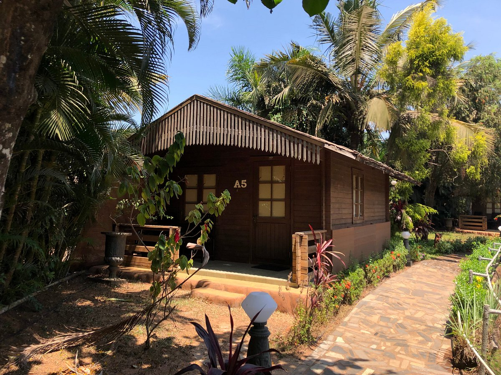

Cost and Rules
Per night:Rs.1359(Rs.1740 saved)+Rs.387(taxes and fees)
Pets are not allowed at the property.
Overview
Hotel 2 is a great choice for travellers looking for a 3 star star hotel in Goa.This Hotel stands out as one of
the highly recommended hotel.From all the 3 Star hotels,Hotel 2 is very much popular among the tourists. A
smooth check-in/check-out process, flexible policies and friendly management garner great customer satisfaction
for this property. The Hotel has standard Check-In time as 02:00 PM and Check-Out time as 11:00 AM. It is a
couple-friendly property, hence it is absolutely safe for unmarried couples to stay here.
What our guests think
- Big area
- Good staff
- Good place
- Nice stay
- Nice location
are some highly appreciated and talked about aspects of the Hotel 2.With an overall rating of 3.9 out of 5
(1839 Ratings), The property is rated very good by 38% of the guests, 36% have rated it good, 14% have rated it
average, 12% have rated it bad.In terms of Location 95% people like the location of Hotel 2.84% like the clean
surrounding of the property and 68% said that property is Easily Accessible.Safety And Hygiene is the top
priority for the Hotel 2 with score 59%. 33% Guests like the Thermal Screening feature. Staff Hygiene feature
is liked by 50% users.Hotel 2 provides a top class Service Quality as 72% guest liked it. 74% guests like the
Room Service quality. 67% guests like the Reception Area.Also 66% guests liked the Laundry Service of the
hotel.Hotel 2's Amenities are liked by the 61% of guest. Also 74% guest said that Television was working in their
rooms.